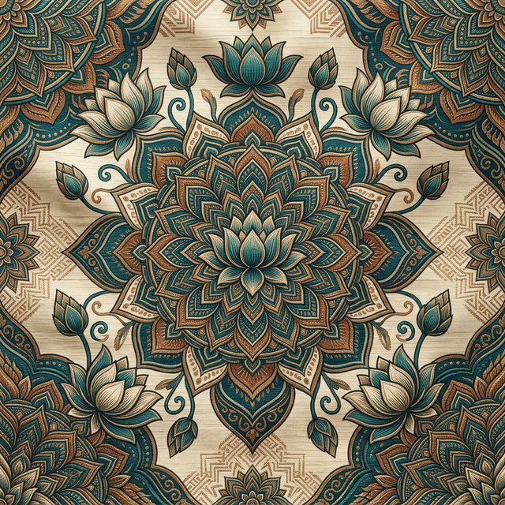

Tratamentos de Thai Yoga Massage focados na escuta do corpo e na recuperação da amplitude natural.
Muitas vezes, o corpo grita antes de sabermos que estamos cansados. A minha abordagem não é sobre "consertar" algo que está partido, mas sobre escutar o que o corpo tem para dizer através da tensão.
No Thai Yoga Massage, não trabalhamos apenas músculos; trabalhamos memórias e silêncios. É um diálogo rítmico onde o papel é criar o espaço necessário para que o corpo se lembre de como se mover livremente.

Cada sessão é um ritual de presença. Trabalhamos no chão, sobre um colchão confortável, o que permite uma maior amplitude de movimentos e alavancagem para os alongamentos.
Não há pressa. O tempo da sessão é respeitado para que o sistema nervoso possa realmente baixar a guarda e permitir a libertação das tensões profundas.
Não. O objetivo da massagem é precisamente ajudar a recuperar a flexibilidade. Trabalhamos sempre dentro do limite de conforto.
Deve usar roupa confortável e flexível (estilo fato de treino ou ioga). A massagem é feita sobre a roupa.
Pode haver momentos de "boa dor" — aquela sensação de libertação de um nó — mas nunca deve ser desconfortável. O diálogo é constante.
Normalmente as sessões duram entre 60 a 90 minutos, dependendo da necessidade do corpo.